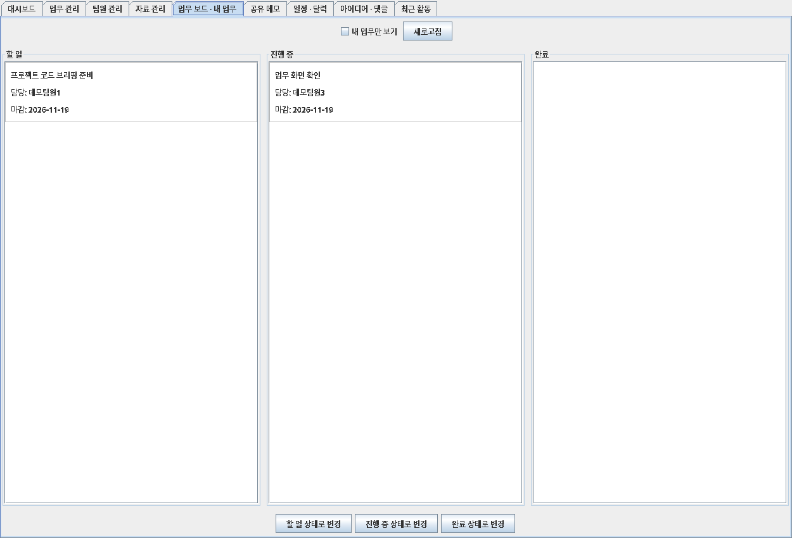
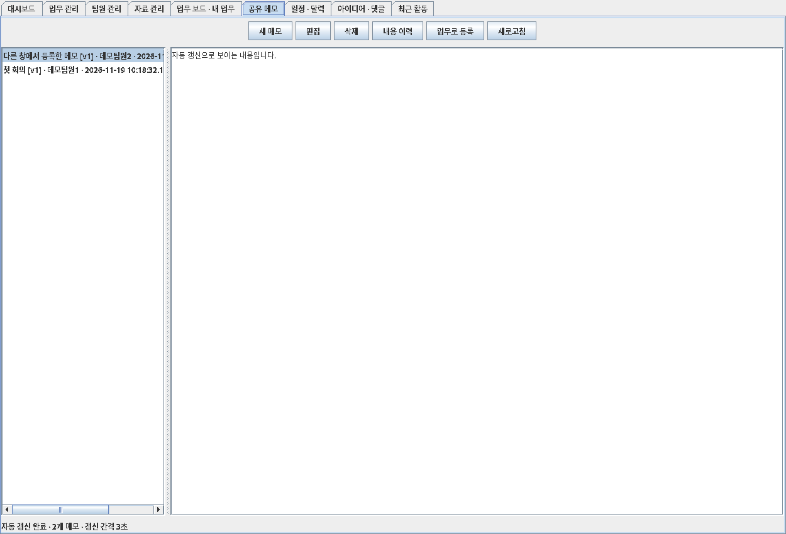
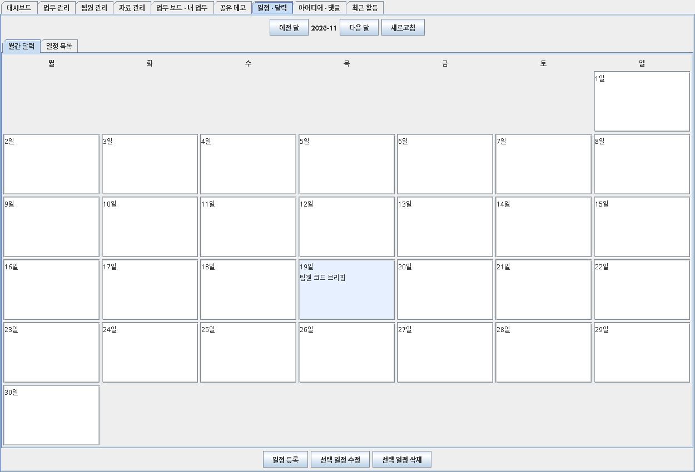
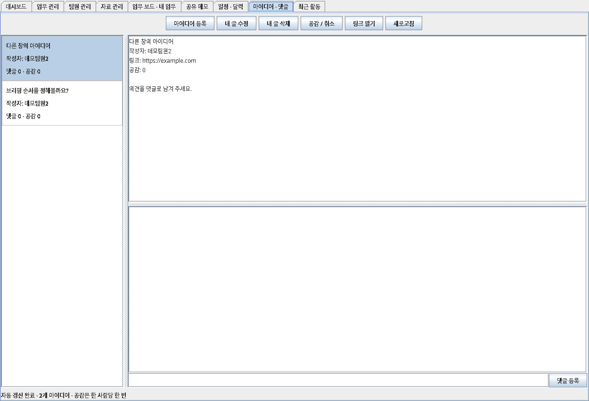

버튼 하나에서 DB까지,
담당 코드를 끝까지 설명하기
파일별 책임 · 실제 메서드 흐름 · 모듈의 이유 · 알고리즘 실행 예제
조원별 5개 설명서공유 메모 / 업무 보드 / 아이디어현재 브랜치의 소스는 저장소 루트 src입니다. 기존 작성본은 다른 브랜치와 이전 커밋에 보존합니다. 왼쪽 메뉴에서 담당자를 선택하고 코드 색인으로 실제 메서드를 따라가세요.
실제 실행 화면 4장 보기
상태별 업무 보드

공유 메모

월간 달력

아이디어·댓글

코드를 이해하고 브리핑하는 순서
목표는 파일을 외우는 것이 아니라, 입력값을 바꿨을 때 결과를 실행 전에 예측하는 것입니다. 설명서만 읽고 이해했다고 판단하지 말고 아래 과정을 반복하세요.
1. 공통 구조부터 확인
Main → LoginFrame → UserDAO → TeamDAO → MainFrame 순서로 파일을 엽니다. 종이에 로그인 회원 번호와 선택한 팀 번호를 각각 적으세요. 회원 10과 팀 7은 서로 다른 값입니다. p.setInt(1, teamId)의 1은 첫 번째 물음표의 위치입니다.
2. 본인 기능 하나를 끝까지 추적
- 생성자에서 버튼을 찾습니다.
addActionListener가 호출하는 메서드를 찾습니다.- 그 메서드가 어떤 입력값을 읽는지 적습니다.
- DAO에 넘기는 인수를 순서대로 적습니다.
- DAO의 SQL에서
?와setInt/setString을 하나씩 대응시킵니다. executeQuery인지executeUpdate인지 확인합니다.- DB에서 바뀌는 행을 예측합니다.
- 화면의
reload가 왜 다시 호출되는지 설명합니다.
처음에는 생성자와 가장 짧은 조회 함수부터 읽고, 등록→수정→삭제→예외 순서로 확장합니다. getX는 데이터 읽기, setText는 화면 글자 변경, setInt는 SQL 인수 설정입니다. 이름이 비슷해도 역할이 다릅니다.
3. 객체와 목록을 구분
Note, Card, Schedule, Idea는 데이터 한 건입니다. ArrayList<Note>는 조회한 여러 건입니다. DefaultListModel<Note>는 JList에 보여줄 목록입니다. JList 자체와 데이터 목록을 같은 것으로 설명하지 마세요. DAO는 화면을 그리지 않고 값을 돌려줍니다.
4. 담당자별 읽기 경로
| 담당 | 먼저 읽기 | 다음에 읽기 | 마지막 난도 높은 부분 |
|---|---|---|---|
| 장*민 | DB_connection·TeamDAO | Main·SchemaSetup | SwingWorker 시작 흐름·트랜잭션과 기록 |
| 이*찬 | UserDAO·LoginFrame·MemberFrame | MemberDAO·NotePanel | NoteDAO의 version 검사·자동 갱신 분리 |
| 윤*훈 | TaskFrame 생성자·TaskDAO 조회 | TaskBoardPanel·CardRenderer | 메모 연결의 생성 키·원자성 |
| 이*주 | InlineProgressData | InlineProgressDAO·Panel | 일정의 월간 겹침 조건과 달력 칸 계산 |
| 신*준 | MaterialPanel·MaterialDAO | MainFrame·DashboardPanel | IdeaDAO의 댓글·공감·트랜잭션과 렌더러 |
5. 이해 확인
본인 코드에서 아래를 모두 설명해 보세요.
- 메서드 입력, 반환값, 화면·DB에 생기는 변화.
- 팀 번호 조건을 없애면 어떤 다른 팀 데이터가 섞이는지.
try-with-resources가 닫는 객체와 화면 전체가 공유하는 Connection의 차이.- 실패 시 어떤 catch로 가는지, 입력은 유지되는지, 부분 저장은 남는지.
- 선택한 행이 없을 때와 동시에 다른 사람이 수정했을 때의 차이.
- 가장 핵심인 반복문 또는 조건문을 작은 예로 손으로 실행하기.
설명에 막히면 파일 전체를 다시 읽기보다, 해당 메서드의 한 입력 예를 만들어 실행 경로를 따라가세요. 색인의 메서드 목록은 빠뜨린 부분이 없는지 점검하는 용도입니다.
Eclipse IDE 2023-12에서 가져오기
이 프로젝트는 Eclipse 2023-12 + Java 17을 기준으로 설정했습니다. Java 21 JDK도 사용할 수 있지만 소스와 출력 바이트코드는 17 수준으로 맞춥니다. IDE 버전과 설치된 JDK 버전은 서로 다른 정보입니다.
1. JDK 확인
Windows 터미널에서 java -version, javac -version을 실행합니다. Eclipse에 포함된 실행용 Java와 프로젝트 컴파일에 사용할 JDK가 다를 수 있습니다. javac를 찾을 수 없다면 JDK 설치 경로의 bin이 PATH에 등록됐는지 확인하세요.
2. 프로젝트 가져오기
- ZIP 전체를 압축 해제합니다. src·lib·docs·.project·.classpath가 같은 폴더에 있어야 합니다.
- Eclipse에서
File → Import → General → Existing Projects into Workspace를 선택합니다. Select root directory에 압축을 푼 폴더를 지정합니다.TeamProjectManagerFeedback을 선택하고 Finish를 누릅니다.src/teamproject/common/Main.java를 우클릭하여Run As → Java Application을 실행합니다.
Java 파일을 하나씩 기존 프로젝트에 복사하면 클래스패스·JDBC JAR·스키마 리소스가 빠질 수 있으므로 프로젝트 단위로 가져오세요. 현재 브랜치의 TeamProjectManagerFeedback 프로젝트를 실행합니다.
3. JRE System Library 오류가 보이면
Window → Preferences → Java → Installed JREs에서 설치된 JDK 17 경로를 Add합니다. JDK 21만 설치돼 있다면 그 경로를 등록하고, Execution Environments → JavaSE-17에서 호환 JDK를 연결할 수도 있습니다.
프로젝트 우클릭 → Properties → Java Build Path → Libraries에서 JRE System Library [JavaSE-17]을 확인합니다. 연결이 풀렸다면 해당 항목을 Edit하여 Execution environment: JavaSE-17을 선택합니다.
프로젝트 우클릭 → Properties → Java Compiler의 compliance level은 17입니다. 제공한 .settings/org.eclipse.jdt.core.prefs가 프로젝트별 설정을 저장합니다. IDE 자체를 Java25로 올리거나 최신 Eclipse로 바꿀 필요는 없습니다.
4. 한글·스키마·드라이버
Properties → Resource → Text file encoding은 UTF-8입니다.- lib 폴더의 MySQL·H2 JAR 두 개가 Build Path에 포함되어 있어야 합니다.
Project → Clean후 자동 빌드합니다.bin/teamproject/common/schema.sql이 생기는지 확인합니다. src 안의 비Java 리소스이므로 기본 Eclipse 빌더가 복사합니다.- 스키마 리소스가 빠지면 build.bat 또는 build.sh를 실행해서 복사할 수 있습니다.
module-info.java의 모듈 이름은 TeamProjectManagerFeedback이며 JDK 표준 java.sql·java.desktop을 사용합니다. 패키지 이름을 새로 바꾸거나 module-info를 지울 필요는 없습니다.
5. 명령행 실행
build·test 스크립트는 javac --release 17을 사용합니다. 설치된 컴파일러가 21이어도 Java17 바이트코드를 만듭니다. Java17보다 낮은 컴파일러에서는 실행하지 마세요. 데모 계정은 demo1~demo5 / demo1234입니다.
근거: Eclipse 4.30 릴리스 노트는 Java SE17 환경을 기준으로 설명하고, 2023-12 JDT 문서는 해당 릴리스의 언어 지원을 안내합니다. 이번 수정은 프로젝트 버전 설정·리소스 인코딩·실행 스크립트를 맞춘 것이며, 수업 기능과 팀원 역할은 동일합니다.
전체 흐름·모듈·자료구조
기존 버전과 확장 버전
현재 브랜치는 피드백 반영 프로젝트 하나를 저장소 루트에 배치합니다. src·lib·docs·.project가 같은 루트에 있습니다. 기존 작성본은 main, refactor/member-packages 브랜치와 이전 커밋에 남아 있습니다. 기능별 5개 패키지와 별도 데모 DB 구조는 유지합니다.
시작과 로그인
flowchart TD
A["Main: 실행 방식 선택"] --> B["SchemaSetup: 전용 DB 준비"]
B --> C["LoginFrame: 아이디·비밀번호"]
C --> D{"UserDAO: 인증 성공?"}
D -->|실패| C
D -->|성공| E["TeamDAO: 소속 팀 조회"]
E --> F{"소속 팀 개수"}
F -->|0개| C
F -->|1개| G["MainFrame: 선택한 팀"]
F -->|여러 개| H["팀 선택창"]
H --> G
실제 호출 순서: Main.main → SwingUtilities.invokeLater → Main.start → SwingWorker.doInBackground → SchemaSetup.initialize → done → LoginFrame 생성자 → doLogin → UserDAO.login → TeamDAO.findTeams → MainFrame 생성자.
로그인 결과의 User.userId는 사람 번호입니다. Team.teamId는 프로젝트 번호입니다. 회원 10이 팀 7·42에 모두 속할 수 있습니다. 팀 42를 선택하면 모든 화면에 동일한 42를 넘깁니다. 로그인에 성공했다는 사실만으로 소속 없는 팀을 자동 배정하지 않습니다.
버튼 한 번의 흐름
flowchart TD
A["화면: 버튼 이벤트"] --> B{"입력·선택 검사"}
B -->|정상| C["DAO: SQL과 인수 설정"]
B -->|오류| D["안내 후 입력 유지"]
C --> E["JDBC: DB 조회·저장"]
E --> F["결과 객체 또는 성공 여부"]
F --> G["reload: 모델 다시 채우기"]
G --> H["Swing: 화면 표시"]
Frame/Panel은 입력과 표시, DAO는 SQL, DTO 내부 클래스는 데이터 한 건을 맡습니다. MVC 프레임워크를 추가하지 않고 이 세 역할만 구분했습니다. Connection은 일반 화면에서 하나를 전달하며, 자동 갱신만 별도 연결을 열어 읽고 닫습니다.
어떤 모듈을 왜 쓰는가
| 모듈·패키지/도구 | 사용 클래스 예 | 역할·선택 이유 |
|---|---|---|
java.base |
String, List, ArrayList, LocalDate, YearMonth, Path, InputStream | 문자열·목록·날짜·파일 읽기. JDK 기본 기능이므로 별도 설치 불필요 |
java.sql |
Connection, DriverManager, PreparedStatement, ResultSet, SQLException | JDBC의 공통 인터페이스. DB가 바뀌어도 DAO 구조를 유지 |
java.desktop의 Swing |
JFrame, JPanel, JButton, JTable, JList, Timer, SwingWorker | 수업에서 설명 가능한 데스크톱 화면·이벤트·갱신 |
java.awt |
BorderLayout, GridLayout, Desktop, Color | 화면 배치·색·브라우저 열기 |
| H2 JDBC 드라이버 | org.h2.Driver | 설치 없이 파일 DB로 시연, 메모리 DB로 테스트. 자바 표준 모듈이 아닌 외부 라이브러리 |
| MySQL Connector/J | com.mysql.cj.jdbc.Driver | 별도 MySQL 서버에 접속할 때 사용. JDK 자체가 MySQL 통신을 구현하지 않음 |
src/module-info.java의 requires java.sql, requires java.desktop은 위 JDK 모듈 사용 선언입니다. 기능별 teamproject.member 같은 패키지와 JPMS 모듈, 외부 JAR 라이브러리를 같은 단어로 혼동하지 마세요.
SQL을 읽는 규칙
- SELECT는
executeQuery()→ ResultSet → while(next()) → 객체 목록 반환입니다. - INSERT/UPDATE/DELETE는
executeUpdate()→ 영향받은 행 수입니다. UPDATE 결과 0은 조건에 맞는 행이 없었다는 뜻입니다. ?는 값을 넣는 자리입니다. SQL의 구조와 사용자 입력을 분리합니다. 첫?는 1번부터 시작합니다.- JOIN은 외래키로 연결된 표를 함께 읽습니다. 예:
updated_by=user_id로 수정자의 이름을 얻습니다. - 트랜잭션은 여러 SQL을 하나의 저장 단위로 묶습니다.
setAutoCommit(false) → 작업 → commit, 실패하면rollback, finally에서 true 복원입니다. try (PreparedStatement ...; ResultSet ...)는 사용이 끝난 쿼리 객체를 닫습니다. 전달받은 일반 Connection을 각 DAO가 닫으면 다른 화면도 끊기므로 닫지 않습니다. 자동 갱신용 Connection은 직접 열었으므로 그 작업이 닫습니다.
테이블 구조
프로그램이 읽는 스키마의 기준 파일은 src/teamproject/common/schema.sql입니다.
| 영역 | 테이블 | 핵심 관계 |
|---|---|---|
| 기존 사용자·팀 | users, teams, team_members | 사용자↔팀은 team_members로 다대다 연결 |
| 기존 업무·일정·자료 | tasks, schedules, materials | teamid로 프로젝트 소속, assigneeid·uploader_id로 사용자 연결 |
| 공유 메모 | notes, note_history | 메모 1개에 여러 버전. (note_id, version)이 이력의 복합키 |
| 메모→업무 | task_notes | 업무 1개에 연결 메모 1개. 메모 1개에서 업무 여러 개 생성 가능 |
| 아이디어 | ideas, ideacomments, ideareactions | 게시물에 여러 댓글, 사용자당 공감 1개 |
| 공통 기록 | activity_log | 저장 시 팀·사용자·동작·시각 기록 |
erDiagram
notes ||--o{ note_history : "내용 버전"
notes ||--o{ task_notes : "결정 사항"
tasks ||--o| task_notes : "원문 연결"
erDiagram
ideas ||--o{ idea_comments : "댓글"
ideas ||--o{ idea_reactions : "공감"
users ||--o{ idea_reactions : "사용자별 1개"
notes 삭제 시 이력과 연결 행만 CASCADE 삭제됩니다. 이미 만든 tasks 행은 남습니다. ideas 삭제 시 댓글·공감은 CASCADE 삭제됩니다. task_notes는 복사한 원문 전체가 아니라 현재 메모로 연결합니다. 생성 당시 설명은 tasks.description에 복사되어 남고, '원본 메모' 버튼은 최신 메모 내용을 보여줍니다.
자동 갱신과 동시 편집은 별개
메모는 3초, 아이디어 목록은 5초마다 폴링합니다. Timer가 작업을 시작하고 SwingWorker가 별도 연결에서 SELECT합니다. 결과는 EDT의 done에서 화면에 반영합니다. Timer는 해당 탭이 보일 때만 조회하고, removeNotify에서 중지합니다. 로딩 중인 작업이 있으면 또 시작하지 않습니다.
목록 자동 갱신은 다른 사람이 쓴 내용을 보이게 하는 기능입니다. 동시 수정 충돌 방지는 별도로 notes.version을 비교합니다. 이 두 가지를 '글자 단위 실시간 공동 편집'이라고 설명하면 안 됩니다.
일반 저장 버튼·기존 조회는 단순한 동기 JDBC 호출입니다. 긴 원격 지연에서 모든 동작을 비동기로 처리하는 구조까지 도입하지 않았습니다. 자동 폴링과 시작 준비처럼 반복되거나 오래 걸릴 수 있는 작업에는 SwingWorker를 적용했습니다.
장*민 — DB·공통 시스템 브리핑
담당 범위는 common 패키지의 Main, DB_connection, SchemaSetup, TeamDAO, ActivityDAO와 schema.sql입니다. 어떤 화면이 열려도 같은 사용자·팀 데이터를 사용하도록 기반을 제공하는 역할입니다. ActivityPanel 화면은 신*준 담당이며 기록 저장·조회 DAO는 이 문서의 담당입니다.
시작 전에 알아둘 값
| 값 | 예 | 의미·보관 위치 |
|---|---|---|
| JDBC URL | jdbc:h2:file:… 또는 jdbc:mysql:… | 접속할 DB의 주소. DB_connection 정적 필드 |
| DB 사용자·비밀번호 | sa / 데모 빈 값 | DB 연결용. 프로그램 로그인 계정과 다름 |
| 로그인 userId | 10 | 사용자를 구분. UserDAO.User 객체 |
| 선택한 teamId | 7 또는 42 | 현재 관리할 프로젝트. TeamDAO.Team 객체 |
| Connection | conn | DB와 통신하는 JDBC 연결 객체. 화면 생성자에 전달 |
static 필드는 DB 접속 설정을 프로그램 한 프로세스에서 공유합니다. 사용자·팀은 임의 전역 숫자로 고정하지 않고 로그인 결과 객체를 통해 넘깁니다. 여러 PC에서는 각 프로세스가 자기 Connection을 갖고 같은 MySQL 데이터를 봅니다.
Main.java: 실행 흐름
main은SwingUtilities.invokeLater(Main::start)를 호출합니다.Main::start는 start 메서드를 나중에 실행할 작업으로 넘기는 문법입니다.- EDT가 실행 방식 선택창을 엽니다. 취소하면 종료합니다.
- 데모면 사용자 홈 폴더를 만들고 H2 파일 경로를 정합니다. MySQL이면 전용 DB 주소·사용자·비밀번호를 읽습니다.
DB_connection.configure로 접속 값을 기억합니다.- 시작 대기창을 띄운 뒤
SwingWorker를 실행합니다.doInBackground에서 연결·스키마 준비,done에서 결과를 꺼내 로그인 화면을 엽니다. - 준비 중 실패하면 연결을 닫고 오류를 표시합니다. DAO 안에서 화면을 만들지 않습니다.
왜 SwingWorker인가: DB 준비 때문에 EDT가 기다리면 창을 그리거나 버튼 이벤트를 처리하지 못합니다. 배경 스레드는 오래 걸릴 작업, EDT는 Swing 화면 변경을 맡습니다. get()은 done 시점에 이미 끝난 배경 작업의 결과 또는 예외를 받습니다.
DB_connection.java: 드라이버와 JDBC
configure는 값을 저장할 뿐 연결하지 않습니다. open이 DriverManager.getConnection(url,user,password)을 호출할 때 실제 연결됩니다. DriverManager는 클래스패스의 JDBC 드라이버에서 URL에 맞는 구현을 사용합니다. 프로그램은 Connection 인터페이스를 사용하므로 H2와 MySQL 분기가 DAO마다 필요하지 않습니다.
자동 메모 갱신은 open으로 별도 읽기 연결을 만들고 try-with-resources로 닫습니다. 일반 화면이 사용하는 conn을 배경 스레드가 동시에 사용하면 트랜잭션 상태가 섞일 수 있어 분리했습니다.
SchemaSetup.java: 초기화와 데모 데이터
initialize는 클래스 리소스로 schema.sql을 읽습니다. UTF-8로 문자열을 만들고, SQL 주석을 제거하고, 세미콜론 단위로 나눠 비어 있지 않은 명령을 Statement로 실행합니다. 이 파일은 프로그램이 제공하는 고정 DDL이므로 사용자 입력을 붙이지 않습니다. 이 간단한 분리기는 임의의 SQL 덤프·프로시저를 해석하는 범용 파서가 아닙니다.
CREATE TABLE IF NOT EXISTS이므로 같은 스키마를 다시 준비해도 표가 중복 생성되지 않습니다. 기존 다른 구조를 자동 변경하는 마이그레이션 기능은 아닙니다. 전용 새 DB를 사용하는 이유입니다.
데모일 때만 seedDemo를 호출합니다. users가 비어 있지 않으면 그대로 돌아갑니다. 처음이면 회원 10~50, 팀 7·42, 소속·업무·첫 메모·일정·아이디어를 한 트랜잭션으로 넣습니다. 도중 실패하면 전부 취소합니다. ID가 반드시 1부터 시작한다고 가정하지 않는지 시연할 수 있습니다.
TeamDAO.java: 소속 팀과 공통 검사
findTeams(conn,userId)는 teams와 teammembers를 teamid로 JOIN하고 WHERE m.user_id=?로 사용자의 소속만 조회합니다. 각 행을 Team 객체에 담아 ArrayList로 돌려줍니다. Team.toString은 선택창에 보일 이름입니다.
requireMember(conn,teamId,userId)는 두 값이 함께 존재하는지 SELECT 1로 확인합니다. 반환할 상세 정보가 필요하지 않아 이름 전체를 읽지 않습니다. 없으면 SQLException을 던져 호출한 DAO가 저장을 중단합니다. 새 메모·아이디어·댓글·공감·일정 저장이 이 공통 검사를 사용합니다.
ActivityDAO.java: 기록과 조회
record는 팀·사용자·동작을 activity_log에 INSERT합니다. 기록 시각은 DB 기본값입니다. 호출한 DAO가 진행 중인 트랜잭션을 그대로 사용하므로 메모·아이디어 저장과 활동 기록이 함께 commit되거나 함께 rollback됩니다. record 스스로 commit하지 않는 이유입니다.
recent는 users와 JOIN해 사람 이름을 얻고 activity_id 내림차순으로 최근 30건을 반환합니다. 같은 시각 기록도 정수 키로 순서가 결정됩니다. 반환값은 화면에 바로 넣을 문자열 목록입니다.
기록 범위는 메모 저장, 일정 저장, 아이디어 저장·댓글·공감입니다. 아직 모든 기존 기능과 삭제를 추적하는 감사 로그는 아닙니다.
핵심 알고리즘을 예로 설명
회원 10으로 로그인 → findTeams는 [팀7,팀42] 반환 → 사용자가 팀42 선택 → MainFrame이 42를 모든 화면에 전달합니다. 팀7의 메모를 조회하는 SQL은 실행되지 않습니다. setInt(1,42)에서 1은 첫 물음표, 42가 실제 팀 번호입니다.
메모 저장에 활동 기록까지 3개 SQL이 필요하다면, 첫 SQL 성공만으로 성공 안내하지 않습니다. 마지막까지 성공해야 commit합니다. 예외가 발생하면 rollback으로 시작 전 상태로 되돌립니다.
브리핑 원고 예시
“제 코드는 실행 방식과 DB 연결을 준비하고, 로그인한 사람이 속한 팀을 조회하는 공통 부분입니다. 화면은 JDBC의 Connection을 받아 기능별 DAO를 호출합니다. 로컬 데모는 H2를 사용하지만 SQL과 JDBC 구조는 MySQL 방식과 같습니다. 새 공유 기능의 저장과 활동 기록은 같은 트랜잭션에서 처리해 부분 저장을 막았습니다.”
교수 질문에 답하기
- DB 로그인과 프로그램 로그인 차이? DB 로그인은 저장소에 접속하는 권한, 프로그램 로그인은 users에서 사용자를 찾는 기능입니다.
- 왜 TeamDAO를 분리했나? 로그인 화면과 모든 새 저장 기능이 같은 소속 검사 규칙을 사용하기 때문입니다.
- 왜 ID를 7·42로 시연하나? 기존의 1 고정 문제가 실제로 사라졌는지 확인하기 위해서입니다.
- 왜 메모마다 새 연결을 여나? 배경 폴링과 화면의 저장 트랜잭션이 같은 Connection을 공유하지 않도록 하기 위해서입니다.
- 왜 DB에 활동 시간을 저장하나? 여러 PC의 화면 시각 대신 같은 DB의 저장 시각을 사용하기 위해서입니다.
직접 확인할 과제
demo1으로 두 소속을 확인하고 팀42에 들어가 보세요. users가 비어 있지 않으면 데모 초기화가 왜 건너뛰는지 설명하세요. ActivityDAO.record에서 commit을 추가하면 호출한 메모 저장에 어떤 문제가 생길지 예측하세요. 각 메서드의 실제 위치는 코드 색인을 확인하세요.
이*찬 — 로그인·팀원·공유 메모 브리핑
담당 파일은 member 패키지의 UserDAO, LoginFrame, MemberDAO, MemberFrame, NoteDAO, NotePanel입니다. 기존 로그인·팀원 관리에 사용자를 식별할 수 있는 공유 메모를 추가했습니다. 메모에서 업무를 만드는 창과 SQL은 윤*훈 담당 파일을 호출합니다.
기존 로그인과 팀원 관리
UserDAO.User는 회원 번호와 이름을 갖는 작은 데이터 객체입니다. login은 아이디·비밀번호를 PreparedStatement에 넣고 한 행이 있으면 User, 없으면 null을 반환합니다. 이름만 돌려주면 소속 팀이나 작성자를 식별할 수 없어 userId도 함께 반환합니다.
LoginFrame 생성자는 입력칸·로그인 버튼을 만들고 doLogin을 연결합니다. doLogin은 빈 값 검사→UserDAO.login→TeamDAO.findTeams→팀 선택→MainFrame 열기→로그인 창 dispose 순서입니다. 인증 실패·소속 팀 없음·팀 선택 취소는 서로 다른 분기입니다.
MemberFrame은 JTable과 DefaultTableModel을 구분합니다. 등록·수정창의 값을 읽고 MemberDAO에 넘긴 뒤 목록을 다시 조회합니다. 수정창에는 이름·학번·역할이 있습니다. JTable 열 0의 user_id를 사용하므로 화면 행 번호 자체를 회원 번호로 쓰면 안 됩니다.
MemberDAO의 주요 메서드:
| 메서드 | 입력 | DB 처리 | 성공·실패 |
|---|---|---|---|
| loadMembers | conn, 모델, teamId | users와 team_members JOIN, 팀 조건 | 표 행을 다시 채움 |
| insertMember | 팀·아이디·비밀번호·이름·역할 | users INSERT 후 생성 키로 team_members INSERT | 두 저장 모두 성공 시 commit, 실패 시 rollback |
| updateMember | 팀·회원·이름·학번·역할 | 소속 확인 후 users와 team_members UPDATE | 부분 변경을 트랜잭션으로 방지 |
| deleteMember | 팀·회원 | team_members만 DELETE | 사용자 로그인 계정과 기존 담당 업무는 남음 |
같은 아이디로 이미 가입한 사용자를 다른 팀에 초대하는 기능은 별도입니다. insertMember는 신규 계정을 등록합니다. 역할 문자열을 바꿔도 teams.leader_id가 바뀌는 팀장 이관 기능은 구현하지 않았습니다.
공유 메모 데이터와 화면
NoteDAO.Note의 필드: id(메모 번호), version(수정 버전), authorId(원 작성자), title·content, editor(마지막 수정자 이름), updatedAt. final은 생성 후 필드에 다른 값을 다시 대입하지 못하게 합니다. 배경 갱신에서 받은 객체는 화면에 표시할 스냅샷입니다.
NotePanel은 왼쪽 JList·오른쪽 읽기 전용 내용·위쪽 버튼으로 구성됩니다. 편집은 별도 모달 입력창입니다. 배경 목록이 바뀌어도 그 입력창의 JTextArea를 갱신하지 않으므로 작성 중인 글을 잃지 않습니다.
새 메모 저장 흐름
새 메모 버튼 → edit(null) → 제목·내용 읽기 → NoteDAO.save(id=0) → notes INSERT → 생성된 note_id 받기 → note_history v1 INSERT → ActivityDAO.record → commit → reload.
번호를 SELECT MAX로 추측하지 않고 getGeneratedKeys로 받는 이유는, 다른 사용자가 동시에 INSERT해도 내가 생성한 행의 번호를 얻기 위해서입니다.
수정 충돌을 막는 알고리즘
UPDATE notes
SET content=?, version=version+1, ...
WHERE note_id=? AND team_id=? AND version=?
화면에서 읽은 버전과 DB의 버전이 같은 경우만 UPDATE합니다.
| 순서 | 사용자 A | 사용자 B | DB 버전 |
|---|---|---|---|
| 1 | v1을 읽음 | v1을 읽음 | 1 |
| 2 | v1 조건으로 저장 성공 | 편집 중 | 2 |
| 3 | 저장 완료 | v1 조건으로 저장 시도 | 2 |
| 4 | — | 영향 행 0 → 충돌 안내 | 2 유지 |
executeUpdate()==0이면 rollback 후 false를 반환합니다. 나중에 저장한 사용자가 먼저 저장한 내용을 조용히 덮어쓰지 않습니다. 수정 성공 후에만 다음 버전의 내용 이력과 활동 기록을 넣습니다. 삭제도 화면 버전과 같은 경우만 수행하여 최신 수정본을 모르고 삭제하는 일을 줄입니다.
이 방식은 낙관적 잠금입니다. 편집창을 열어 놓은 동안 DB 행을 잠그지 않고, 저장 순간 충돌 여부를 확인합니다. 글자를 자동 병합하지는 않습니다. 충돌하면 현재 입력을 복사하고 취소한 뒤 최신 메모를 다시 열어 사용자가 합칩니다.
자동 갱신 알고리즘
Timer(3000) → 탭이 보이는지 검사 → reload → loading이면 건너뜀 → SwingWorker.doInBackground → 별도 Connection으로 NoteDAO.list → done → 목록 교체·이전 선택 ID 복원 → loading=false.
메서드별 역할:
addNotify/removeNotify: 패널이 화면에 붙거나 떨어질 때 타이머 시작·중지.reload: 배경 조회와 화면 갱신 조정. 일반 conn과 별도의 읽기 연결을 사용.selected: 선택이 없으면 안내. 선택한 Note 또는 null 반환.edit: 입력창을 열고 저장 실패 시 반복하여 수정 기회 제공.delete: 사용자 확인→버전 조건 삭제→갱신.history: teamId와 noteId로 내용 이력을 읽어 읽기 전용 창 표시.
list의 JOIN은 notes.updated_by로 마지막 수정자의 이름을 얻습니다. history는 notes와 JOIN해 같은 팀의 이력만 읽습니다. 이력은 내용(content) 중심이며 과거 제목 전체를 복원하는 기능은 아닙니다.
사용 모듈·자료구조
| 도구 | 왜 필요한가 |
|---|---|
| ArrayList |
SQL 조회 결과 여러 건을 보관 |
| DefaultListModel·JList | 보관 목록과 표시 목록을 분리 |
| JTextArea·JOptionPane | 긴 메모 입력, 입력 유지·취소 |
| Swing Timer | 정해진 간격에 갱신 이벤트 발생 |
| SwingWorker | 배경 SQL과 EDT 화면 변경을 분리 |
| PreparedStatement·Connection | SQL 인수 설정과 트랜잭션 |
브리핑 원고와 확인 문제
“로그인한 회원 번호를 팀 조회와 메모 작성자 정보에 사용합니다. 메모 자동 갱신은 3초 폴링이며, 수정 충돌은 별도로 version 조건으로 검사합니다. v1을 읽은 두 사람 중 먼저 저장한 사람이 v2를 만들고, 나중 사람의 UPDATE는 0행이 되어 내용을 덮어쓰지 않습니다.”
스스로 답하세요: loading을 없애면? 팀 조건을 없애면? history INSERT만 실패하면? 팀원 삭제가 users까지 삭제하지 않는 이유는? 정답: 중복 배경 작업 가능, 타 팀 데이터 노출 가능, 메모 저장도 rollback, 기존 업무·자료가 참조하는 사용자와 로그인 계정을 보존해야 하기 때문입니다.
윤*훈 — 업무 CRUD·보드·메모 연결 브리핑
담당은 task 패키지의 TaskDAO, TaskFrame, TaskBoardPanel, TaskCardRenderer, TaskFromNoteDialog입니다. 기존 CRUD와 진행률 연결을 유지하고, 같은 tasks 데이터를 표·보드·내 업무로 다르게 보여주는 기능을 추가했습니다.
먼저 이해할 객체
| 객체 | 사용 위치 | 담는 값 |
|---|---|---|
| TaskDAO.Assignee | 담당자 JComboBox | userId·이름, toString은 이름 표시 |
| TaskDAO.TaskInfo | 등록·수정 입력창 | 업무 번호·제목·설명·담당자·상태·마감일 |
| TaskDAO.Card | 업무 보드 | 번호·담당자·이름·상태·마감일 |
| DefaultTableModel | 기존 표 화면 | 업무 5개 기본 열과 진행률 패널이 붙인 마감 안내 열 |
DTO를 따로 둔 이유는 화면 부품 자체를 DAO에 전달하는 부분을 줄이고, 한 건의 입력·조회 결과를 묶기 위해서입니다. 기존 loadTasks는 수업 방식대로 표 모델을 받아 채우는 구조를 유지합니다.
기존 TaskFrame의 흐름
생성자: conn·teamId 저장→표 생성→더블클릭 이벤트→등록·수정·삭제·완료 버튼→초기 조회→InlineProgressPanel 연결→표 변경 시 fitColumns 예약.
getSelectedTaskId: 선택한 행의 첫 열에서 task_id를 읽습니다. 선택이 없으면 -1입니다.registerTask: 입력창→필수 값·날짜 검사→insertTask→reload.updateTask: 선택 ID→findTask로 최신 상세 조회→입력창→updateTask→영향 행 확인→reload.deleteTask: 선택→삭제 확인→deleteTask→결과 안내→reload.completeTask: 선택→상태를 완료로 UPDATE→reload.showTaskInputDialog: 등록·수정이 공유하는 입력창. 날짜는 LocalDate.parse로 해석하고 잘못된 값은 안내 후 반복합니다.reload: 현재 팀 목록을 채운 뒤 진행률 패널도 갱신합니다.fitColumns: 각 열에서 제목과 모든 행의 너비 중 최대값을 찾아 여백을 더합니다. 열 c개·행 n개면 대략 O(c×n) 비교입니다.- 원본 메모 버튼: 선택 ID→sourceNote→읽기 전용 창.
더블클릭으로 여는 MemberFrame에는 같은 teamId를 넘깁니다. 해당 별도 창은 DISPOSEONCLOSE이므로 통합 프로그램을 종료하지 않습니다.
SQL과 팀별 분리
loadTasks/showTasks의 WHERE t.team_id=?가 목록을 제한합니다. findTask·updateTask·updateTaskStatus·deleteTask는 taskid만 확인하지 않고 teamid도 확인합니다. 등록·수정은 requireTeamMember로 담당자가 같은 팀인지 확인합니다.
updateTask에서 setString/setInt 순서는 SQL의 SET 항목 다음 WHERE task_id, WHERE team_id 순서입니다. 메서드 인수 순서와 SQL 인수 순서가 항상 같지는 않으므로 직접 대응표를 적어 보세요.
STATUS_LIST는 상태 이름의 한 기준입니다. 보드와 진행률에서 '완료' 표기가 달라지면 분류·집계가 어긋납니다. DB 상태를 새 문자열로 늘릴 때 화면과 집계도 함께 검토해야 합니다.
상태별 보드·내 업무
TaskBoardPanel은 세 DefaultListModel과 세 JList를 가집니다. 기존 tasks를 복사한 별도 보드 테이블을 만들지 않습니다.
reload → TaskDAO.board → 각 모델 clear → Card마다 STATUS_LIST와 비교 → 일치하는 칸에 addElement.
상태 종류가 3개로 고정되어 n개 업무에 약 3n회 비교하므로 O(n)입니다. 조회는 마감일·업무 ID 순입니다. 같은 데이터이므로 보드에서 상태를 바꾼 뒤 표나 진행률 탭을 열면 변경이 반영됩니다.
내 업무 필터 SQL:
WHERE t.team_id=? AND (?=0 OR t.assignee_id=?)
mine=false면 두 번째 값 0: 앞 조건이 참이어서 팀 전체 조회. mine=true면 1: 앞 조건이 거짓이므로 세 번째 인수인 로그인 userId와 일치하는 업무만 조회. 담당자 이름이 아닌 번호로 비교합니다.
move는 선택한 카드의 id로 기존 updateTaskStatus를 호출합니다. 상태 이동은 버튼 방식입니다. 드래그 앤 드롭을 구현했다고 설명하지 마세요.
TaskCardRenderer: 화면과 데이터 구분
ListCellRenderer는 JList의 한 데이터를 어떻게 그릴지 정하는 인터페이스입니다. getListCellRendererComponent가 Card를 받아 제목·담당자·날짜 JLabel에 넣고 JPanel을 반환합니다. 선택 여부에 따라 배경·글자색만 바꿉니다. 여기서 SQL을 실행하거나 상태를 수정하지 않습니다. 같은 렌더러 객체를 여러 항목을 그릴 때 재사용할 수 있습니다.
메모에서 업무를 만드는 알고리즘
이*찬의 NotePanel이 선택한 Note를 TaskFromNoteDialog.open에 넘깁니다. 제목은 메모 제목을 초기값으로 쓰고, 담당자는 현재 팀 목록, 마감일은 사용자가 입력합니다.
flowchart TD
A["메모·입력값 받기"] --> B["담당자와 메모의 팀 확인"]
B --> C["tasks INSERT"]
C --> D["getGeneratedKeys: 새 task_id"]
D --> E["task_notes에 연결 INSERT"]
E --> F["둘 다 성공하면 commit"]
C -->|SQL 실패| G["rollback"]
E -->|SQL 실패| G
업무만 생기고 연결이 빠진 상태를 막기 위해 트랜잭션으로 묶습니다. note_id는 원문을 찾는 연결 키입니다. 생성 당시 메모 내용은 tasks.description에 복사되므로, 나중에 메모가 삭제되어도 만든 업무와 설명은 남습니다. sourceNote는 연결된 메모의 현재 내용을 보여줍니다.
브리핑과 확인
“보드는 기존 업무의 다른 보기입니다. 상태별로 데이터를 세 목록에 나누고, 내 업무 필터는 로그인 회원 번호로 SQL 조건을 바꿉니다. 메모에서 업무를 만들 때 생성 키로 연결 표를 저장하고 두 INSERT를 한 트랜잭션으로 묶었습니다.”
예측 문제: 팀7 업무3건 중 회원30이2건이면 내 업무 표시 개수는? 완료 상태로 바꾸면 새 행이 생기는가? 원문 메모를 삭제하면 업무도 없어지는가? 답은 2건, UPDATE라 새 행 없음, 업무는 남고 연결만 삭제입니다.
이*주 — 진행률·일정·달력 브리핑
담당은 schedule 패키지의 InlineProgressData, InlineProgressDAO, InlineProgressPanel, ScheduleDAO, SchedulePanel입니다. 진행률은 기존 tasks를 계산하고, 일정은 schedules를 조회한다는 차이부터 설명하세요. 일정 개수로 업무 완료율을 계산하지 않습니다.
진행률 데이터
InlineProgressData.Person은 회원 번호와 이름, Task는 담당자 번호·상태·마감일을 보관합니다. people·tasks는 ArrayList입니다. DAO가 채우고 계산 클래스가 읽습니다. 계산 클래스는 JDBC나 Swing 없이 순수하게 값을 계산하므로 별도 DB 없이도 예제로 검증할 수 있습니다.
| 메서드 | 알고리즘 | 예 |
|---|---|---|
| getTotalCount(userId) | 모든 업무를 반복하며 전체(0) 또는 해당 담당자 조건으로 개수 증가 | 회원30 업무2개면 2 |
| getCompletedCount(userId) | 담당자 조건과 상태='완료'를 동시에 만족할 때 증가 | 완료1개면 1 |
| getPercent(userId) | 전체0이면0, 아니면 완료×100.0÷전체 후 반올림 | 2/3 → 67% |
| getDeadline(status,due,today) | 완료 먼저 검사, 날짜 없음, 과거·오늘·미래로 분기 | 지연2일·오늘 마감·D-3 |
왜 100.0인가: 정수끼리 나누면 소수점이 먼저 버려질 수 있어 실수 계산을 명시합니다. 왜 업무0개를 먼저 검사하나: 0으로 나눌 수 없기 때문입니다. 완료 업무는 마감일이 과거여도 지연으로 표시하지 않습니다.
각 개수 계산은 업무 n개를 한 번 반복해 O(n)입니다. 이번 프로그램 규모에서는 같은 목록을 몇 번 순회하는 방식이 한 번의 복잡한 집계보다 읽기 쉽습니다.
InlineProgressDAO.load
- 선택한 팀의 team_members와 users를 JOIN해 사람 목록을 만듭니다.
- 선택한 팀의 tasks와 users를 LEFT JOIN해 업무 목록을 만듭니다.
- java.sql.Date를 LocalDate로 바꿉니다. NULL이면 null로 둡니다.
- 팀에서 나갔지만 아직 업무의 담당자로 남은 사용자도 개인 선택 목록에 추가합니다.
- 완성한 InlineProgressData를 반환합니다.
LEFT JOIN을 쓰는 이유는 사용자 정보가 없는 업무라도 가능한 한 누락하지 않으려는 것입니다. 팀원 목록에 이미 있는지 검사하는 내부 반복문이 있어 사람 m명·업무 n개면 최악 O(n×m) 비교가 생길 수 있습니다. 대학 팀 규모에서는 단순 목록 탐색으로 충분하며, 아주 큰 데이터라면 Set을 보조로 써 중복 검사를 개선할 수 있습니다.
InlineProgressPanel
생성자에서 개인 선택 JComboBox·전체/개인 JProgressBar·새로고침 버튼을 만들고, 업무 표에 '마감 안내' 열을 하나 붙입니다. attach는 기존 TaskFrame 위쪽에 이 패널을 추가하고 생성한 패널을 반환합니다.
reload는 DB에서 계산 데이터를 다시 읽고 개인 목록을 채웁니다. updating=true인 동안 콤보박스 이벤트를 무시하여 목록을 채우는 도중 잘못 계산하지 않게 합니다. 이전 선택자의 userId를 기억했다가 다시 선택합니다. 마지막에 showDeadlines와 showProgress를 호출합니다.
showProgress는 선택한 개인과 전체의 막대를 계산하고, 완료되지 않은 업무의 오늘 마감·지연 개수를 셉니다. showDeadlines는 업무 표의 기존 열 값을 읽어 getDeadline 결과를 추가 열에 씁니다. 새로고침 버튼은 업무 목록도 같은 teamId로 다시 읽습니다.
일정 CRUD: ScheduleDAO
Schedule 객체는 id·title·start·end·memo를 갖습니다. 날짜는 문자열로 계속 비교하지 않고 LocalDate로 변환합니다.
list(conn,teamId,month): 해당 달과 기간이 겹치는 일정을 조회합니다.save: 제목 길이와 종료일≥시작일 검사→소속 검사→id0이면 INSERT, 아니면 팀·일정 ID 조건 UPDATE→활동 기록→commit.delete: 팀 번호와 일정 번호를 함께 조건으로 DELETE합니다.
날짜 문자열 파싱 실패는 SchedulePanel에서 사용자에게 안내하고 입력창을 유지합니다. DAO도 종료일 조건을 다시 검사해 UI 외부 호출에서도 잘못된 기간을 막습니다.
이번 달과 겹치는 일정 찾기
일정 시작일 ≤ 이번 달 마지막 날
그리고
일정 종료일 ≥ 이번 달 첫날
시작일이 이번 달인지만 검사하면 10월30일~11월2일 일정이 11월에서 빠집니다. 위 두 조건은 기간이 한 날짜라도 겹치는지 확인합니다. 해당 예제는 11월에 표시되고 12월에는 표시되지 않습니다.
달력의 칸 계산
YearMonth로 표시할 달을 보관합니다. 이전·다음 달 버튼은 minusMonths/plusMonths 후 reload합니다. 연도가 바뀌거나 윤년 2월이어도 직접 일수를 하드코딩하지 않습니다.
- 월~일 제목 7칸을 추가합니다.
- 첫날의 요일 번호(월1~일7)에서 1을 빼 앞쪽 빈칸 개수를 계산합니다.
- 1일부터 lengthOfMonth까지 반복합니다.
- 각 날짜가 일정 시작~종료 사이면 그 일정명을 칸에 추가합니다.
- 오늘이면 배경색을 바꿉니다.
- 마지막 주가 7칸이 되도록 빈칸을 채웁니다.
한 달 날짜 D개와 일정 N개를 비교하므로 O(D×N), D는 최대31입니다. SQL은 월간 후보를 먼저 줄이고 화면은 그 후보를 날짜 칸에 배치합니다.
모듈·브리핑
LocalDate·YearMonth·ChronoUnit은 java.base의 날짜 API이며, 윤년·월 길이·날짜 차이를 직접 계산하는 오류를 줄입니다. GridLayout은 7열 달력을 배치하고, JTable은 일정 수정·삭제 대상을 선택합니다. 달력 칸을 클릭해서 수정하는 기능은 없고 '일정 목록'에서 행을 선택합니다.
“진행률은 tasks에서 완료 개수와 전체 개수를 세어 계산합니다. 일정은 시작과 종료 기간이 표시 월과 겹치는 조건으로 조회합니다. 달력은 첫날 요일로 빈칸을 정하고 각 날짜에 해당 일정을 넣습니다.”
직접 예측: 업무0개는0%, 완료2/전체3은67%, 완료된 과거 업무는완료, 10/30~11/2는11월에표시입니다. 이 네 경우를 코드 분기와 함께 설명할 수 있어야 합니다.
신*준 — 자료·대시보드·아이디어 협업 브리핑
담당 파일은 resource 패키지의 MainFrame, DashboardPanel, MaterialDAO, MaterialPanel, IdeaDAO, IdeaPanel, IdeaCardRenderer, ActivityPanel입니다. 공통 ActivityDAO는 장*민 담당이며, 이 영역은 기록을 보여주는 화면을 맡습니다.
통합 MainFrame
로그인에서 User와 Team을 받습니다. teamId는 Team 객체에서 읽고 userId는 User 객체에서 읽습니다. 제목에 선택한 팀과 로그인 이름을 표시합니다.
기존 4개 탭: 대시보드, 업무, 팀원, 자료. 추가5개: 업무 보드·내 업무, 공유 메모, 일정·달력, 아이디어·댓글, 최근 활동. 각 화면 생성자는 같은 conn·teamId를 받고 작성자가 필요한 기능은 userId도 받습니다.
탭 변경 이벤트는 숫자 인덱스 대신 getSelectedComponent를 비교합니다. 중간 탭 생성 실패로 인덱스가 달라져도 다른 기능을 잘못 갱신하지 않게 하기 위해서입니다. 선택한 화면의 reload를 호출하므로 다른 탭에서 바꾼 결과가 보입니다.
기존 자료 관리
MaterialPanel은 표·등록·수정·삭제·링크 버튼과 입력창을 만듭니다. 제목은100자·링크는500자 제한, 빈 제목·링크를 검사합니다. URL을 클릭하면 Desktop.BROWSE로 OS 기본 브라우저에 넘깁니다. 실행 환경에서 지원하지 않으면 주소를 안내합니다. 파일 자체를 업로드하지는 않습니다.
MaterialDAO는 teamId 조건으로 자료를 읽고, 자료 번호와 teamId를 함께 조건으로 수정·삭제합니다. insertMaterial은 로그인 userId를 필수 uploaderid에 저장합니다. 조회는 url을 우선 읽고 비어 있으면 linkurl을 대신 읽어 기존 링크도 보입니다. getRecentMaterials는 material_id 내림차순과 LIMIT으로 최근 항목을 가져옵니다.
DashboardPanel
reload는 InlineProgressDAO의 계산 데이터를 받아 전체 진행률, 오늘 마감·지연 개수를 표시합니다. 업무 목록은 현재 팀 조건으로 마감일순 정렬합니다. 자료 목록은 getRecentMaterials로 최근5건을 표시합니다. 화면 제목의 '마감 임박' 표현과 달리 업무 목록 자체가 임박 업무만 필터링하는 것은 아니므로 정확히 설명하세요.
아이디어 데이터 구조
| 표·객체 | 역할 |
|---|---|
| ideas / Idea | 제목·내용·링크·작성자·팀 |
| idea_comments | 게시물별 댓글과 작성자 |
| idea_reactions | 게시물과 사용자 한 쌍의 공감 |
| IdeaDAO.Idea.comments/likes | 화면에 표시할 집계 결과 |
댓글과 공감을 게시물 문자열에 붙이지 않고 별도 표에 두면 각각의 사용자·건수를 관리할 수 있습니다. (idea_id,user_id) 복합 기본키는 같은 사용자의 중복 공감 행을 허용하지 않습니다.
IdeaDAO의 메서드
list: 현재 팀 게시물과 작성자 이름을 JOIN합니다. 각 게시물의 댓글·공감은 하위 COUNT 쿼리로 가져와 Idea 객체로 반환합니다.save: 제목·링크 길이, http/https 형식, 팀 소속 검사. 새 글이면 INSERT, 기존이면 teamId·authorId·ideaId가 모두 일치할 때 UPDATE합니다. 활동 기록과 같은 트랜잭션입니다.delete: 작성자와 팀 조건을 모두 검사합니다. 게시물 삭제 시 댓글·공감은 FK의 ON DELETE CASCADE로 삭제됩니다.requireIdea: 현재 팀의 게시물인지 SELECT1로 검사합니다.comments: 부모 ideas와 JOIN해 teamId까지 제한하고 comment_id 순으로 반환합니다.comment: 빈 값·1000자 제한 검사→소속·게시물 확인→댓글 INSERT→활동 기록→commit.toggleLike: 같은 사용자 공감 DELETE→삭제 행이0이면 INSERT→활동 기록→commit.
공감 토글을 손으로 실행
| 기존 공감 행 | DELETE 결과 | 다음 동작 | 최종 상태 |
|---|---|---|---|
| 없음 | 0 | INSERT | 공감1개 |
| 있음 | 1 | 추가 INSERT 안 함 | 공감0개 |
다른 사용자의 공감은 user_id가 달라 삭제되지 않습니다. 빠르게 두 번 눌렀을 때 화면이 이미 바뀌었는지 믿고 계산하지 않고 DB의 실제 삭제 결과를 기준으로 합니다. 같은 사용자의 여러 프로세스가 정확히 동시에 새 공감을 넣으면 기본키가 중복을 막으며, 한쪽은 저장 오류를 안내하고 최신 목록을 다시 확인해야 합니다. 무제한 중복 공감이 저장되지는 않습니다.
IdeaPanel과 카드 렌더러
왼쪽은 아이디어 카드 JList, 오른쪽은 내용과 댓글, 아래는 댓글 입력입니다. list 선택 이벤트가 showDetail을 호출합니다. 내 글 수정은 UI와 DAO에서 모두 작성자 조건을 확인합니다. 댓글 등록 성공 후에만 입력칸을 비우므로 오류가 나면 입력을 잃지 않습니다.
5초 Timer가 목록을 갱신합니다. SQL은 별도 Connection의 SwingWorker에서 실행하고 done에서 모델을 바꿉니다. 이전 선택 id를 기억하므로 갱신 후 같은 게시물을 다시 선택합니다. 댓글 입력 JTextField는 목록 갱신에서 바꾸지 않습니다. 선택한 게시물의 댓글은 showDetail에서 현재 내용으로 읽습니다.
IdeaCardRenderer는 제목·작성자·댓글/공감 수를 JLabel3개에 넣어 작은 카드로 보여줍니다. 역할은 시각적 표현뿐이며, 데이터 저장은 하지 않습니다. ListCellRenderer 인터페이스는 JList가 카드 모양을 요청하는 약속입니다.
최근 활동
ActivityPanel.reload는 ActivityDAO.recent에서 문자열 목록을 받아 JList에 표시합니다. 탭을 열거나 버튼을 누르면 갱신합니다. 별도 실시간 푸시 알림은 아니며 메모·일정·아이디어의 명시된 저장·댓글·공감 활동을 보여줍니다.
설명 원고·질문
“자료는 링크와 업로더를 저장합니다. 새 아이디어 게시판은 게시물·댓글·공감 표를 분리했고, 복합 기본키로 사용자당 공감1개를 보장합니다. 카드 렌더러는 표현만, DAO는 SQL만 맡습니다. 탭을 바꾸면 같은 팀 데이터를 다시 읽어 다른 기능의 결과를 확인합니다.”
질문: 게시물 삭제 후 댓글이 왜 남지 않나? 왜 공감 수를 ideas의 숫자 필드에만 저장하지 않나? 왜 renderer에서 DB를 읽지 않나? 답: FK CASCADE, 누가 눌렀는지 관리하고 중복을 막아야 해서, 그리기는 자주 호출되므로 화면 표현과 DB처리를 분리해야 해서입니다.
10분 시연과 예상 질문
시연 준비
동일 컴퓨터에서 run.bat 또는 run.sh를 두 번 실행합니다. 두 창 모두 로컬 데모·팀7로 들어가되, A는demo1, B는demo2로 로그인합니다. H2 AUTO_SERVER는 같은 파일을 두 JVM에서 열도록 설정되어 있습니다. 여러 물리 PC는 각자의 로컬 데모 파일을 공유하지 않으므로 같은 MySQL 전용 DB에 연결해야 합니다.
| 순서 | 화면에서 할 일 | 코드로 설명할 핵심 |
|---|---|---|
| 1 | demo1 로그인·팀7 선택 | userId와 teamId 구분, TeamDAO JOIN |
| 2 | 팀42로 다른 창 로그인해 목록 비교 | 하드코딩 제거·WHERE team_id |
| 3 | A에서 공유 메모 생성, B에서 공유 메모 탭 유지 | Timer→SwingWorker→별도 JDBC 연결→모델 |
| 4 | 두 창에서 같은 버전의 메모를 편집한 채 A 먼저 저장, B 저장 | version 조건·영향 행0·입력 유지 |
| 5 | 내용 이력 열기 | (note_id,version) 복합키 |
| 6 | 메모에서 업무 생성 후 업무 관리의 원본 메모 보기 | getGeneratedKeys·2개 INSERT·트랜잭션 |
| 7 | 업무 보드에서 내 업무 필터·상태 변경 | 같은 tasks의 다른 보기·분류 반복문 |
| 8 | 10월30일~11월2일 일정 등록, 11월 달력 확인 | 기간 겹침과 요일 빈칸 계산 |
| 9 | 아이디어·링크·댓글·공감, 다시 공감 클릭 | 분리 테이블·복합키·토글 |
| 10 | 최근 활동·대시보드 확인 | 기록 조회·기존 진행률 통합 |
공통 예상 질문
기존 코드와 어떻게 구분했나? 기존 코드는 다른 브랜치와 이전 커밋에 보존하고, 현재 브랜치에는 확장 프로젝트 하나만 남겼습니다. Eclipse에서는 저장소 루트를 가져옵니다.
실시간인가? 메모3초·아이디어5초 폴링입니다. 저장된 결과가 다음 조회 때 보입니다. 글자 단위 공동 편집·서버 푸시가 아닙니다.
동시에 고치면 누가 이기나? 같은 메모 버전으로 먼저 저장해 성공한 사람이 다음 버전을 만듭니다. 나중 저장은0행이라 거절합니다. 자동 병합하지 않습니다.
수정과 새로고침을 왜 나눴나? 저장은 DB를 바꾸고 새로고침은 저장 결과를 읽습니다. 화면 모델은 DB 그 자체가 아니므로 별도로 갱신해야 합니다.
메모를 지우면 만든 업무도 지워지나? 업무는 남고 메모 이력·연결행이 삭제됩니다. 업무 description에 생성 당시 내용이 복사되어 남습니다.
JDBC와 MySQL 드라이버의 차이는? JDBC는 표준 인터페이스, 드라이버는 실제 DB통신 구현입니다. H2도 같은 JDBC를 사용합니다.
스레드가 왜 필요한가? 주기적인 DB 조회·시작 준비 중에도 Swing이 화면을 그릴 수 있도록 합니다. 배경 스레드는 SQL, EDT는 화면을 맡습니다.
코드에서 1이 보이면 모두 고정 ID인가? 아닙니다. setInt(1,teamId)의1은 SQL 첫 물음표 위치, version의1은 첫 버전, 날짜의1은 월 첫날일 수 있습니다. 변수 의미로 구분해야 합니다.
검증을 어떻게 했나? H2 MySQL 호환모드에서52개 검사로 실제 DAO를 실행했습니다. 팀 분리, 버전 충돌, 메모→업무, 일정 겹침, 댓글·공감, 외래키 삭제를 확인했습니다. GUI 검사는9개 탭을 열어 통합 오류를 확인합니다. MySQL 실서버와 물리 다중PC는 별도검증입니다.
기능 경계를 정확히 말하기
보드는 버튼으로 상태를 바꿉니다. 드래그앤드롭은 아닙니다. 자료는 URL을 저장하며 파일 업로드가 아닙니다. 메모 내용 이력은 과거 내용 조회이며 자동 복구·병합이 아닙니다. 최근 활동은 메모·일정·아이디어 저장·댓글·공감의 기록이며 모든 기존 기능의 감사 로그는 아닙니다. 팀생성·초대와 실시간 채팅은 추가하지 않았습니다.
브리핑 준비 완료 기준
본인이 맡은 버튼의 입력값 하나를 바꾸고 실행 결과를 예측할 수 있어야 합니다. 본인 패키지의 모든 메서드에 대해 '입력→조건/반복→호출→반환→화면/DB변화'를 설명하세요. 특히 실패분기와 타 담당자 파일을 호출하는 지점은 코드색인에서 실제 파일을 열어 확인하세요.
파일·메서드 코드 색인
이 표는 실제 소스에서 생성했습니다. 각 담당자의 모든 파일을 확인하고, 메서드 이름을 클릭해 구현을 따라 읽으세요. 생성자는 화면·객체 초기화, get으로 시작하는 단순 메서드는 값 조회입니다. 같은 이름도 파일에 따라 입력과 동작이 다르므로 실제 SQL·본문을 함께 확인하세요.
common
담당: 장*민 · 담당 설명
ActivityDAO.java
활동 기록 저장·최근 목록 조회 · 소스
| 메서드·생성자 | 처리 흐름·역할 |
|---|---|
| record | 현재 트랜잭션에서 활동 한 행을 저장합니다. |
| recent | 현재 팀의 최근 30개 활동을 읽습니다. |
DB_connection.java
DB 접속 설정과 연결 생성 · 소스
| 메서드·생성자 | 처리 흐름·역할 |
|---|---|
| configure | URL·DB 계정을 메모리에 설정합니다. |
| open | 새 JDBC Connection을 반환합니다. |
Main.java
진입점·실행 모드와 DB 준비 · 소스
| 메서드·생성자 | 처리 흐름·역할 |
|---|---|
| main | EDT에 시작 작업을 예약합니다. |
| start | 모드를 선택하고 DB 준비 작업 후 로그인 창을 엽니다. |
| doInBackground | 백그라운드에서 DB 연결·조회만 수행합니다. |
| done | 배경 작업의 결과를 받아 EDT에서 화면을 바꿉니다. |
SchemaSetup.java
전용 스키마·데모 가상 데이터 준비 · 소스
| 메서드·생성자 | 처리 흐름·역할 |
|---|---|
| initialize | 스키마 리소스를 실행하고 필요하면 데모 데이터를 넣습니다. |
| seedDemo | 처음인 경우만 가상 데이터를 트랜잭션으로 저장합니다. |
TeamDAO.java
소속 팀 목록·공통 소속 검사 · 소스
| 메서드·생성자 | 처리 흐름·역할 |
|---|---|
| Team | 내부 데이터 객체의 생성 또는 화면 입력 처리를 담당합니다. 본문과 인수를 확인하세요. |
| getTeamId | 객체가 보관한 TeamId 값을 반환합니다. DB를 바꾸지 않습니다. |
| getTeamName | 객체가 보관한 TeamName 값을 반환합니다. DB를 바꾸지 않습니다. |
| toString | 목록·선택창에 보이는 대표 문자열을 반환합니다. |
| findTeams | 회원의 소속 팀을 JOIN으로 조회합니다. |
| requireMember | 팀·회원 소속이 없으면 예외로 저장을 중단합니다. |
member
담당: 이*찬 · 담당 설명
LoginFrame.java
로그인 입력·팀 선택 · 소스
| 메서드·생성자 | 처리 흐름·역할 |
|---|---|
| LoginFrame | 필드와 화면 부품·이벤트를 초기화하는 생성자입니다. |
| doLogin | 입력 검사→인증→소속 조회→선택→통합 화면 이동입니다. |
MemberDAO.java
팀원 SQL·두 표 변경 트랜잭션 · 소스
| 메서드·생성자 | 처리 흐름·역할 |
|---|---|
| loadMembers | 현재 팀의 사용자·소속 정보를 표에 채웁니다. |
| insertMember | 계정·소속을 함께 저장하고 실패 시 롤백합니다. |
| updateMember | 소속 확인 후 계정 정보·역할을 함께 바꿉니다. |
| deleteMember | 계정은 남기고 해당 팀 소속만 지웁니다. |
MemberFrame.java
팀원 표와 CRUD 입력창 · 소스
| 메서드·생성자 | 처리 흐름·역할 |
|---|---|
| MemberFrame | 필드와 화면 부품·이벤트를 초기화하는 생성자입니다. |
| reload | DB 결과를 다시 읽어 해당 화면 모델을 갱신합니다. |
| registerMember | 등록 입력창의 값을 검사하고 DAO를 호출합니다. |
| updateMember | 소속 확인 후 계정 정보·역할을 함께 바꿉니다. |
| deleteMember | 계정은 남기고 해당 팀 소속만 지웁니다. |
NoteDAO.java
메모 데이터·버전 충돌·내용 이력 · 소스
| 메서드·생성자 | 처리 흐름·역할 |
|---|---|
| Note | 내부 데이터 객체의 생성 또는 화면 입력 처리를 담당합니다. 본문과 인수를 확인하세요. |
| toString | 목록·선택창에 보이는 대표 문자열을 반환합니다. |
| list | 현재 팀 목록을 SQL로 조회하여 DTO 목록을 만듭니다. |
| save | 입력·소속 검사 후 등록/수정하고 필요한 이력·활동을 함께 저장합니다. |
| delete | 현재 팀과 식별 조건에 맞는 행만 삭제합니다. |
| history | 현재 팀 메모의 내용 버전을 최신순 문자열로 반환합니다. |
NotePanel.java
공유 메모 화면·폴링·편집 · 소스
| 메서드·생성자 | 처리 흐름·역할 |
|---|---|
| NotePanel | 필드와 화면 부품·이벤트를 초기화하는 생성자입니다. |
| addNotify | 패널이 화면에 붙으면 자동 갱신 타이머를 시작합니다. |
| removeNotify | 화면에서 떨어지면 타이머를 중지합니다. |
| reload | DB 결과를 다시 읽어 해당 화면 모델을 갱신합니다. |
| doInBackground | 백그라운드에서 DB 연결·조회만 수행합니다. |
| done | 배경 작업의 결과를 받아 EDT에서 화면을 바꿉니다. |
| selected | 선택 항목을 반환하고 없으면 안내합니다. |
| edit | 입력창에서 값을 읽고 저장 실패 시 입력 수정 기회를 줍니다. |
| delete | 현재 팀과 식별 조건에 맞는 행만 삭제합니다. |
| history | 현재 팀 메모의 내용 버전을 최신순 문자열로 반환합니다. |
UserDAO.java
로그인 인증 결과 · 소스
| 메서드·생성자 | 처리 흐름·역할 |
|---|---|
| User | 내부 데이터 객체의 생성 또는 화면 입력 처리를 담당합니다. 본문과 인수를 확인하세요. |
| getUserId | 객체가 보관한 UserId 값을 반환합니다. DB를 바꾸지 않습니다. |
| getName | 객체가 보관한 Name 값을 반환합니다. DB를 바꾸지 않습니다. |
| login | 아이디·비밀번호가 맞으면 회원 객체, 아니면 null입니다. |
task
담당: 윤*훈 · 담당 설명
TaskBoardPanel.java
상태별 업무 분류·내 업무 필터 · 소스
| 메서드·생성자 | 처리 흐름·역할 |
|---|---|
| TaskBoardPanel | 필드와 화면 부품·이벤트를 초기화하는 생성자입니다. |
| reload | DB 결과를 다시 읽어 해당 화면 모델을 갱신합니다. |
| move | 선택 카드의 상태를 바꾸고 세 칸을 다시 채웁니다. |
TaskCardRenderer.java
업무 카드의 표시 · 소스
| 메서드·생성자 | 처리 흐름·역할 |
|---|---|
| TaskCardRenderer | 필드와 화면 부품·이벤트를 초기화하는 생성자입니다. |
| getListCellRendererComponent | DTO의 값을 라벨에 넣고 카드 패널을 반환합니다. |
TaskDAO.java
업무 SQL·보드 조회·메모 연결 · 소스
| 메서드·생성자 | 처리 흐름·역할 |
|---|---|
| showTasks | 현재 팀 업무를 콘솔로 출력합니다. |
| loadTasks | 현재 팀 업무를 표 모델에 채웁니다. |
| Assignee | 내부 데이터 객체의 생성 또는 화면 입력 처리를 담당합니다. 본문과 인수를 확인하세요. |
| getUserId | 객체가 보관한 UserId 값을 반환합니다. DB를 바꾸지 않습니다. |
| getName | 객체가 보관한 Name 값을 반환합니다. DB를 바꾸지 않습니다. |
| toString | 목록·선택창에 보이는 대표 문자열을 반환합니다. |
| TaskInfo | 내부 데이터 객체의 생성 또는 화면 입력 처리를 담당합니다. 본문과 인수를 확인하세요. |
| getTaskId | 객체가 보관한 TaskId 값을 반환합니다. DB를 바꾸지 않습니다. |
| getTitle | 객체가 보관한 Title 값을 반환합니다. DB를 바꾸지 않습니다. |
| getDescription | 객체가 보관한 Description 값을 반환합니다. DB를 바꾸지 않습니다. |
| getAssigneeId | 객체가 보관한 AssigneeId 값을 반환합니다. DB를 바꾸지 않습니다. |
| getStatus | 객체가 보관한 Status 값을 반환합니다. DB를 바꾸지 않습니다. |
| getDueDate | 객체가 보관한 DueDate 값을 반환합니다. DB를 바꾸지 않습니다. |
| getTeamMembers | 현재 팀의 담당자 선택 목록입니다. |
| findTask | 현재 팀의 업무 상세 한 건 또는 null입니다. |
| insertTask | 같은 팀 담당자인지 확인하고 업무를 만듭니다. |
| updateTask | 같은 팀의 업무를 수정하고 영향 행 여부를 반환합니다. |
| updateTaskStatus | 같은 팀 업무의 상태만 바꿉니다. |
| deleteTask | 같은 팀의 업무를 삭제합니다. |
| requireTeamMember | 업무 담당자가 현재 팀에 있는지 검사합니다. |
| Card | 내부 데이터 객체의 생성 또는 화면 입력 처리를 담당합니다. 본문과 인수를 확인하세요. |
| toString | 목록·선택창에 보이는 대표 문자열을 반환합니다. |
| board | 현재 팀·선택한 개인 필터로 카드 목록을 반환합니다. |
| insertFromNote | 메모 소속 확인→업무 생성 키→연결 저장→commit입니다. |
| sourceNote | 현재 팀 업무에 연결된 최신 원문 메모입니다. |
TaskFrame.java
기존 업무 CRUD·표·진행률 통합 · 소스
| 메서드·생성자 | 처리 흐름·역할 |
|---|---|
| TaskFrame | 필드와 화면 부품·이벤트를 초기화하는 생성자입니다. |
| isCellEditable | 내부 데이터 객체의 생성 또는 화면 입력 처리를 담당합니다. 본문과 인수를 확인하세요. |
| mouseClicked | 내부 데이터 객체의 생성 또는 화면 입력 처리를 담당합니다. 본문과 인수를 확인하세요. |
| fitColumns | 열별 제목·행의 최대 표시 너비를 찾습니다. |
| reload | DB 결과를 다시 읽어 해당 화면 모델을 갱신합니다. |
| getSelectedTaskId | 선택 행의 실제 업무 번호를 읽고 선택이 없으면 -1입니다. |
| registerTask | 입력→등록→표·진행률 갱신입니다. |
| updateTask | 같은 팀의 업무를 수정하고 영향 행 여부를 반환합니다. |
| deleteTask | 같은 팀의 업무를 삭제합니다. |
| completeTask | 선택 업무를 완료로 변경하고 갱신합니다. |
| showTaskInputDialog | 등록·수정 공통 입력창에서 날짜·필수 값을 검사합니다. |
| addInputRow | 내부 데이터 객체의 생성 또는 화면 입력 처리를 담당합니다. 본문과 인수를 확인하세요. |
TaskFromNoteDialog.java
공유 메모에서 결정 업무 입력 · 소스
| 메서드·생성자 | 처리 흐름·역할 |
|---|---|
| open | 선택한 메모로 업무 입력창을 열고 업무·연결 저장을 호출합니다. |
schedule
담당: 이*주 · 담당 설명
InlineProgressDAO.java
진행률 계산용 데이터 조회 · 소스
| 메서드·생성자 | 처리 흐름·역할 |
|---|---|
| load | 현재 팀의 사람·업무를 계산용 객체로 읽습니다. |
InlineProgressData.java
개수·퍼센트·날짜 계산 · 소스
| 메서드·생성자 | 처리 흐름·역할 |
|---|---|
| Person | 내부 데이터 객체의 생성 또는 화면 입력 처리를 담당합니다. 본문과 인수를 확인하세요. |
| getUserId | 객체가 보관한 UserId 값을 반환합니다. DB를 바꾸지 않습니다. |
| getName | 객체가 보관한 Name 값을 반환합니다. DB를 바꾸지 않습니다. |
| toString | 목록·선택창에 보이는 대표 문자열을 반환합니다. |
| Task | 내부 데이터 객체의 생성 또는 화면 입력 처리를 담당합니다. 본문과 인수를 확인하세요. |
| getAssigneeId | 객체가 보관한 AssigneeId 값을 반환합니다. DB를 바꾸지 않습니다. |
| getStatus | 객체가 보관한 Status 값을 반환합니다. DB를 바꾸지 않습니다. |
| getDueDate | 객체가 보관한 DueDate 값을 반환합니다. DB를 바꾸지 않습니다. |
| getPeople | 객체가 보관한 People 값을 반환합니다. DB를 바꾸지 않습니다. |
| getTasks | 객체가 보관한 Tasks 값을 반환합니다. DB를 바꾸지 않습니다. |
| getTotalCount | 전체 또는 지정한 개인의 업무 수를 셉니다. |
| getCompletedCount | 개인 조건과 완료 상태가 일치하는 업무를 셉니다. |
| getPercent | 0건 분기 후 완료/전체 비율을 반올림합니다. |
| getDeadline | 완료·날짜 없음·과거·오늘·미래로 나누어 안내합니다. |
InlineProgressPanel.java
진행률·마감 안내 표시 · 소스
| 메서드·생성자 | 처리 흐름·역할 |
|---|---|
| attach | 진행률 패널을 기존 화면 위쪽에 붙여 반환합니다. |
| InlineProgressPanel | 필드와 화면 부품·이벤트를 초기화하는 생성자입니다. |
| actionPerformed | 사용자 선택과 새로고침 이벤트를 구분합니다. |
| reload | DB 결과를 다시 읽어 해당 화면 모델을 갱신합니다. |
| showProgress | 전체·개인 막대와 오늘/지연 개수를 표시합니다. |
| setBar | 특정 사용자의 개수·퍼센트를 막대에 넣습니다. |
| showDeadlines | 업무 표의 각 행에 마감 안내를 계산해 넣습니다. |
ScheduleDAO.java
일정 SQL·기간 검증 · 소스
| 메서드·생성자 | 처리 흐름·역할 |
|---|---|
| Schedule | 내부 데이터 객체의 생성 또는 화면 입력 처리를 담당합니다. 본문과 인수를 확인하세요. |
| list | 현재 팀 목록을 SQL로 조회하여 DTO 목록을 만듭니다. |
| save | 입력·소속 검사 후 등록/수정하고 필요한 이력·활동을 함께 저장합니다. |
| delete | 현재 팀과 식별 조건에 맞는 행만 삭제합니다. |
SchedulePanel.java
월간 달력·일정 CRUD · 소스
| 메서드·생성자 | 처리 흐름·역할 |
|---|---|
| isCellEditable | 내부 데이터 객체의 생성 또는 화면 입력 처리를 담당합니다. 본문과 인수를 확인하세요. |
| SchedulePanel | 필드와 화면 부품·이벤트를 초기화하는 생성자입니다. |
| reload | DB 결과를 다시 읽어 해당 화면 모델을 갱신합니다. |
| selected | 선택 항목을 반환하고 없으면 안내합니다. |
| edit | 입력창에서 값을 읽고 저장 실패 시 입력 수정 기회를 줍니다. |
| delete | 현재 팀과 식별 조건에 맞는 행만 삭제합니다. |
resource
담당: 신*준 · 담당 설명
ActivityPanel.java
최근 활동 목록 화면 · 소스
| 메서드·생성자 | 처리 흐름·역할 |
|---|---|
| ActivityPanel | 필드와 화면 부품·이벤트를 초기화하는 생성자입니다. |
| reload | DB 결과를 다시 읽어 해당 화면 모델을 갱신합니다. |
DashboardPanel.java
기존 진행률·업무·자료 요약 · 소스
| 메서드·생성자 | 처리 흐름·역할 |
|---|---|
| DashboardPanel | 필드와 화면 부품·이벤트를 초기화하는 생성자입니다. |
| isCellEditable | 내부 데이터 객체의 생성 또는 화면 입력 처리를 담당합니다. 본문과 인수를 확인하세요. |
| isCellEditable | 내부 데이터 객체의 생성 또는 화면 입력 처리를 담당합니다. 본문과 인수를 확인하세요. |
| reload | DB 결과를 다시 읽어 해당 화면 모델을 갱신합니다. |
IdeaCardRenderer.java
아이디어 카드의 표시 · 소스
| 메서드·생성자 | 처리 흐름·역할 |
|---|---|
| IdeaCardRenderer | 필드와 화면 부품·이벤트를 초기화하는 생성자입니다. |
| getListCellRendererComponent | DTO의 값을 라벨에 넣고 카드 패널을 반환합니다. |
IdeaDAO.java
게시물·댓글·공감 SQL · 소스
| 메서드·생성자 | 처리 흐름·역할 |
|---|---|
| Idea | 내부 데이터 객체의 생성 또는 화면 입력 처리를 담당합니다. 본문과 인수를 확인하세요. |
| toString | 목록·선택창에 보이는 대표 문자열을 반환합니다. |
| list | 현재 팀 목록을 SQL로 조회하여 DTO 목록을 만듭니다. |
| save | 입력·소속 검사 후 등록/수정하고 필요한 이력·활동을 함께 저장합니다. |
| delete | 현재 팀과 식별 조건에 맞는 행만 삭제합니다. |
| requireIdea | 선택 게시물이 현재 팀 소속인지 검사합니다. |
| comments | 현재 팀 게시물의 댓글을 순서대로 읽습니다. |
| comment | 댓글 입력을 검사하고 댓글·활동을 함께 저장합니다. |
| toggleLike | 기존 공감 삭제, 없었다면 등록하는 토글입니다. |
IdeaPanel.java
아이디어 카드·댓글 입력·5초 갱신 · 소스
| 메서드·생성자 | 처리 흐름·역할 |
|---|---|
| IdeaPanel | 필드와 화면 부품·이벤트를 초기화하는 생성자입니다. |
| addNotify | 패널이 화면에 붙으면 자동 갱신 타이머를 시작합니다. |
| removeNotify | 화면에서 떨어지면 타이머를 중지합니다. |
| reload | DB 결과를 다시 읽어 해당 화면 모델을 갱신합니다. |
| doInBackground | 백그라운드에서 DB 연결·조회만 수행합니다. |
| done | 배경 작업의 결과를 받아 EDT에서 화면을 바꿉니다. |
| selected | 선택 항목을 반환하고 없으면 안내합니다. |
| showDetail | 선택 게시물과 댓글을 오른쪽에 표시합니다. |
| edit | 입력창에서 값을 읽고 저장 실패 시 입력 수정 기회를 줍니다. |
| delete | 현재 팀과 식별 조건에 맞는 행만 삭제합니다. |
| like | 선택 게시물 공감을 토글하고 목록을 갱신합니다. |
| comment | 댓글 입력을 검사하고 댓글·활동을 함께 저장합니다. |
| openLink | 허용된 참고 링크를 브라우저로 엽니다. |
MainFrame.java
9개 탭 생성·같은 사용자와 팀 전달 · 소스
| 메서드·생성자 | 처리 흐름·역할 |
|---|---|
| MainFrame | 필드와 화면 부품·이벤트를 초기화하는 생성자입니다. |
MaterialDAO.java
자료 링크 SQL·업로더 저장 · 소스
| 메서드·생성자 | 처리 흐름·역할 |
|---|---|
| MaterialInfo | 내부 데이터 객체의 생성 또는 화면 입력 처리를 담당합니다. 본문과 인수를 확인하세요. |
| getMaterialId | 객체가 보관한 MaterialId 값을 반환합니다. DB를 바꾸지 않습니다. |
| getTitle | 객체가 보관한 Title 값을 반환합니다. DB를 바꾸지 않습니다. |
| getDescription | 객체가 보관한 Description 값을 반환합니다. DB를 바꾸지 않습니다. |
| getUrl | 객체가 보관한 Url 값을 반환합니다. DB를 바꾸지 않습니다. |
| getCreatedAt | 객체가 보관한 CreatedAt 값을 반환합니다. DB를 바꾸지 않습니다. |
| loadMaterials | 현재 팀 자료를 표에 넣고 이전 링크 컬럼도 호환합니다. |
| getRecentMaterials | 현재 팀 최신 자료를 제한 개수만 반환합니다. |
| insertMaterial | 로그인한 업로더와 링크를 현재 팀 자료로 저장합니다. |
| findMaterial | 현재 팀 자료 한 건 또는 null을 반환합니다. |
| updateMaterial | 같은 팀 자료의 제목·내용·링크를 바꿉니다. |
| deleteMaterial | 같은 팀 자료를 삭제합니다. |
MaterialPanel.java
자료 표·입력·브라우저 열기 · 소스
| 메서드·생성자 | 처리 흐름·역할 |
|---|---|
| MaterialPanel | 필드와 화면 부품·이벤트를 초기화하는 생성자입니다. |
| isCellEditable | 내부 데이터 객체의 생성 또는 화면 입력 처리를 담당합니다. 본문과 인수를 확인하세요. |
| mouseClicked | 내부 데이터 객체의 생성 또는 화면 입력 처리를 담당합니다. 본문과 인수를 확인하세요. |
| reload | DB 결과를 다시 읽어 해당 화면 모델을 갱신합니다. |
| getSelectedMaterialId | 표의 실제 자료 번호를 읽습니다. |
| registerMaterial | 자료 입력창→DAO 등록→목록 갱신입니다. |
| updateMaterial | 같은 팀 자료의 제목·내용·링크를 바꿉니다. |
| deleteMaterial | 같은 팀 자료를 삭제합니다. |
| openSelectedUrl | 선택한 주소를 기본 브라우저로 엽니다. |
| showMaterialDialog | 자료 제목·주소 필수값과 길이를 검사합니다. |